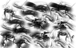

Eh... wywali³em shoutboxa. Licznik wystarczy. ;]
Zacznê swoj¹ wypowiedŸ przeprosinami. Bowiem bardzo zaniedba³em stronkê i najwy¿szy czas j¹ odœwie¿yæ. Chcia³em wprowadziæ jak¹œ wiêksz¹ aktualizacjê. Ale rok szkolny oraz obowi¹zki, które niestety muszê nosiæ troszkê mnie przeci¹¿y³y no i widaæ co siê sta³o... Ale no nic. Przede wszystkim poprawi³em burdel w paru dzia³ach i stronki powinny szybciej siê ³adowaæ. Wiêc wzi¹³em z dzia³u recenzje, recki gier i wstawi³em je do odœwie¿onej formy "Polecanych gier" [teraz siê zwie "Recenzje gier"]. Resztê wyci¹³em bo uzna³em, ¿e bêdzie za ciê¿ko to wszystko wzi¹æ ogarn¹æ, a ¿e materia³u by³oby ma³o no to có¿... Próbujê dzia³aæ przysz³oœciowo. Doda³em te¿ doœæ du¿¹ liczbê recenzji. Dziwicie siê wysokim notkom i doœæ przychylnymi recenzjami? Koniec. Choæ doœæ sprawiedliwie wystawia³em ocenê koñcow¹ tak teraz bêdê bra³ wszystko bra³ pod uwagê i karczowa³ s³abe punkty recenzowanych przeze mnie gier. Dzia³ sprzêtowy zosta³ zaktualizowany. A zaczyna siê troszkê dziaæ... No i zastanawiam siê nad nowymi wersjami materia³ów - zapowiedzi... Ale wszystko w swoim czasie.
Tymczasem ¿yczê mi³ej lektury. ;]
Ech... Znowu trza iœæ do szko³y. W kolejnej aktualizacji zobaczycie oczywiœcie nowe filmiki w "Film Dnia" oraz "Muzyka Dnia". Do tego zaktualizowa³em dzia³ "Sprzêtowy", da³em nowe recenzje, ulepszy³em dzia³ "Ulepszanie PC'ta". Enjoy.
Najwy¿szy czas na aktualizacjê do 6.0.5 . Co przygotowa³em? Nowe recenzje. Parê usprawnieñ. Aktualizacja "Ulepszanie PC'ta". Odœwie¿ony "Film dnia". Odœwie¿ona "Muzyka dnia". Usprawiony dzia³ "Fotki"... Po prostu wiêcej wszystkiego. W przysz³oœci dam kolejn¹ porcjê i obmyœlam nad kolejnymi zmianami. Enjoy. ;]
A wiêc tak. Dzisiaj sobie obejrza³em najnowszy gametrailers TV.
Co w nim takiego znalaz³em? Jakieœ nowoœci? Otó¿, mia³em okazjê zobaczyæ Left4Dead 2, który niby siê zapowiada na kopiuj&wklej pierwszego Left4Dead to tak nie jest. Niby jest bardziej kolorowo. Mo¿e jest mniej strachu. Ale z filmików po prostu wychodzi ta ca³a grywalnoœæ. A wiêc tak. Je¿eli chodzi o zmiany wizualne to oczywiœcie dodali kampanie podczas œwiat³a dziennego. Jest troszkê bardziej kolorowo. Ma byæ dodanych parê dodatkowych bajerów. No i zombiaki wygl¹daj¹ troszkê lepiej. Mamy nowe bronie. Nowych ocala³ych. Ale do broni wróciwszy. Spodoba³ mi siê granatnik oraz broñ rêczna jak np: siekiera. Widaæ, ¿e urozmaicili rozgrywkê i nie chc¹, by klienci dostali kiepski produkt. Jeszcze nieŸle wygl¹da charger. Akcja na moœcie, kiedy wprost wbija siê w ca³¹ czwórkê ocala³ych wygl¹da œwietnie i epicko. Tylko animacja dorwania przez Chargera, któregoœ z nas wygl¹da jak dla mnie kiepsko. Aczkolwiek mogê powiedzieæ, ¿e bêdzie mniej strachu a wiêcej frajdy ze strzelania do zombie. No i Valve ma te¿ w planach danie darmowe DLC dla pierwszego Left4Dead. Bodaj¿e dodatkowa kampania oraz mapy do trybu survival. Ostatnio mi ta firma podpad³a ale teraz znowu pracuje na pe³nych obrotach. Piêknie, piêknie. Zerkn¹æ mo¿na te¿ by³o na trailer gry RAGE [ten ju¿ jest autorstwa id Software], który wygl¹da te¿ œwietnie. Grafika wygl¹da troszkê komiksowo a la Borderlands, jednak spodoba³y mi siê pewne elementy. Jazda wygl¹da nieŸle, œwiat po katastrofie te¿ nieŸle ale takie drobnostki jak stoj¹ce lub chodz¹ce i strzelaj¹ce dzia³ka z pewnoœci¹ umil¹ zabawê. Oj pamiêtam ten moment w Half Life 2, kiedy chmara wrogów nadchodzi³a a dzia³ka obrotowe mnie broni³y. Do tego fizyka cia³a [ragdoll] wygl¹da naturalnie. Mo¿e byæ hit. Potem pora na Dirt2. Wygl¹da po prostu fotorealistycznie i na pierwszy rzut oka mo¿na stwierdziæ, ¿e nie ma ró¿nicy miêdzy real na t¹ gr¹. Có¿, po d³u¿szym poogl¹daniu gra faktycznie wygl¹da fenomenalnie ale jednak grom sporo brakuje do idealnego odwzrorowania rzeczywistoœci. Ot, sposób w jaki siê samochody rozbijaj¹ wygl¹da jak dla mnie kiepsko i ju¿ wola³em ten model zniszczeñ w Grand Theft Auto 4. Teraz znowu Left4Dead 2. Zauwa¿y³em dodatkowe smaczki. Ot, policjant zombie, który ma specjalny kombinezon [zapewne kamizelka kuloodporna], którego nie bêdzie ³atwo szybko ubiæ. I znowu wracam do broni. Fajnie bêdzie postrzelaæ z ak-47 do zombiaków. Inny rodzaj shotguna automatycznego. Naboje zapalaj¹ce [!]. Du¿o broni rêcznych: ot, patelni¹ bêdzie mo¿na ubijaæ zombiaków. Albo z kija bejsbolowego komuœ przyfasoliæ. Ciê¿ko mi to stwierdziæ ale to jest tak naprawdê nowy lepszy Left4Dead. Mnóstwo ulepszeñ i jak na pocz¹tku stwierdza³em, ¿e to bardziej dodatek tak teraz stwierdzam, ¿e to faktycznie niez³a kontynuacja. Ale postacie faktycznie jakieœ takie ma³o ciekawe. Potem Madden NFL10 czyli amerykañski futbol. Nic nadzwyczajnego. NieŸle wygl¹da ale to tylko tyle. Mo¿e boisko z padaj¹cym œniegiem wygl¹da fajnie ale to na tyle. ;] NHL10 czyli hokej. Tryb twardziela gdzie musisz przywaliæ drugiej osobie. Nie, nie z kija. Z piêœci. Te¿ mnie to zmartwi³o. :/ Potem znowu Left4Dead. Tym razem nadchodz¹ce DLC. Bêdzie ono umiejscowione miêdzy kampani¹ "No Mercy" a "Death Toll". Ten kto gra³ w tryb komentatorski "No Mercy" powinien ju¿ znaæ fabu³ê. Pilot helikoptera opowiada³, ¿e Ÿle siê czuje po ostatnim l¹dowaniu po nie zara¿onego no i w³aœnie zamieni³ siê w zombiaka po czym, helikopter siê rozbi³. Bêdzie o tyle fajnie, ¿e bêdzie mo¿na te mapy rozegraæ w trybie Versus. :] Teraz dopytki Gabe'a Newell'a [ten od Valve] o parê rzeczy miêdzy innymi Half Life 2: Episode Three, wsparcie Orange Boxa na PS3, co jest wa¿niejsze Counter Strike 2 czy Portal 2... W ka¿dym razie, dobry odcinek. Oby takich wiêcej!
Niestety, strona nie jest tak popularna jak przewidywa³em. A szkoda. Oczekiwa³em, ¿e wiele osób coœ napisze na shoutboxie, poogl¹da jakieœ nowoœci no a tutat... zawód. Strona bêdzie troszkê rzadziej aktualizowana w³aœnie po to, by inni mogli zobaczyæ te informacje, których nie zobaczyli. Ale, ¿eby nie by³o. Strona bêdzie ca³y czas ulepszana. Je¿eli chodzi o iloœæ dop³ywaj¹cych informacji troszkê przystopowa³em ale oczywiœcie bêd¹ przybywaæ. Strona by³a odœwie¿ana [a wiêc bardzo silnie modyfikowana] przez 2 tygodnie. Pisa³em masê tekstu, uploadowa³em 2 filmiki wa¿¹ce razem ok. 700 MB, uploadowa³em masê zdjêæ dla strony internetowej. Ca³y czas szuka³em ewentualnych rzeczy, do ulepszenia. A skoñczy³o siê na tym, ¿e z 12 osób zajrza³o na stronê i tyle. Parê osób skomentowa³o, a praktycznie jedna napisa³a, co mo¿na by by³o zmieniæ. Tak, wiem, do listy goœci troszkê osób próbowa³o siê zapisaæ, ale ona nie dzia³a³a i przepraszam za t¹ usterkê. Mam jednak nadziejê, ¿e niektórzy doceni¹ to, co stworzy³em.
Pozdrawiam...
Fuad
Ma³e wprowadzenie do mojej strony internetowej. Strona jest napisana w html. Obiecywa³em, ¿e strona w wersji 6.0 bêdzie napisana w php. Niestety, plany siê trochê zmieni³y i postanowi³em to wam wynagrodziæ. Czym? Ano praktycznie odœwie¿y³em ca³¹ stronê, dok³adnie wszystko odkurzy³em, pozmienia³em to i owo oraz doda³em wiele nowoœci. Tym razem codziennie bêdê aktualizowa³ stronê. Nie chodzi mi dok³adnie o jakieœ wiêksze nowoœci ale niektóre nowe dzia³y jednak wymagaj¹ takich aktualizacji. A wiêc. Mo¿e bardziej przybli¿ê wszystko. Na pierwszy rzut oka strona prawie w ogóle siê nie zmieni³a. Lewa strona troszkê inaczej wygl¹da, na górze dodano nowy link [zamiast kiepskiej strza³ki] i je¿eli siê cz³owiek bardziej przyjrzy to zobaczy te¿ troszkê inn¹ czcionkê. Strona g³ówna jest odchudzona ale rozszerzono na niej parê rzeczy oraz dodano nowoœci [news]. Lista jak siê ze mn¹ skontaktowaæ, ju¿ nie jest taka chaotyczna. A teraz czas na moj¹ specjalnoœæ. Postanowi³em, ¿e jak ju¿ coœ nowego zrobiê to porz¹dnie. I sta³o siê. Dzia³ sprzêtowy siê odrobinê zmieni³, kolejny "fotki" dosta³ mocnego kopa i przyby³o du¿o nowych fotek. Wykasowa³em jeden dzia³ z pomoc¹ jak zrobiæ prost¹ stronê internetow¹ [ale jednak jest na stronie g³ównej link do poradnika]. A teraz fajna seria: "Film dnia", "Muzyka dnia", "Polecane gry", "Ulepszanie PC'ta", "recenzje" oraz "Download"... W dziale "Film dnia" codziennie bêdzie siê pojawiaæ nowy filmik, który wed³ug mnie jest godny polecenia. W dziale "Muzyka dnia" bêdê codziennie wsadza³ now¹ piosenkê [bêdê siê stara³ z teledyskiem], które akurat pulubi³em + krótki opis tego co polubi³em oraz tekst piosenki. W ten sposób powstanie pokaŸna historia. ;] W dziale "Polecane gry" bêdê pisa³ minirecenzje gier. Analiza wielu elementów, wypisanie plusów i minusów oraz ocena. W dziale "Ulepszanie PC'ta" dowiesz siê, jak przyspieszyæ sprzêt oraz wyeliminowaæ problemy ze sprzêtem. W kolejnym dziale "Recenzje" bêd¹ siê pojawiaæ... no co innego jak recenzje. Jednak bêdzie doœæ du¿y wachlarz testów. Recenzje próbnych lub wczesnych wersji gier, sprzêtu, filmów, seriali oraz... muzyki. W "Download" znajdziecie wiele plików, które mog¹ siê przydaæ i z w³asnego doœwiadczenia polecam. Pliki posortowane s¹ alfabetycznie. A wiêc: zapraszam do lektury. ;]
